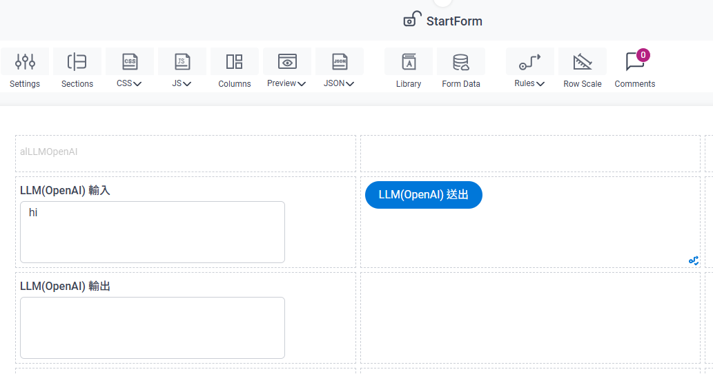
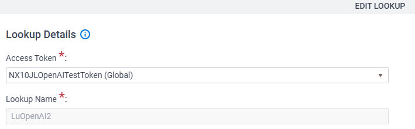
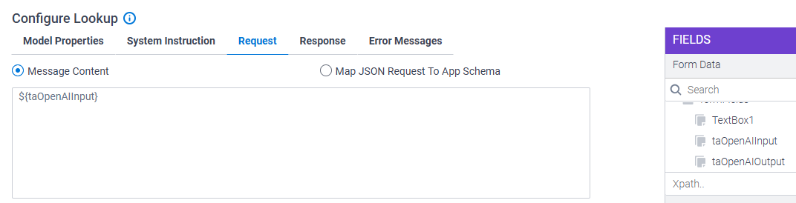
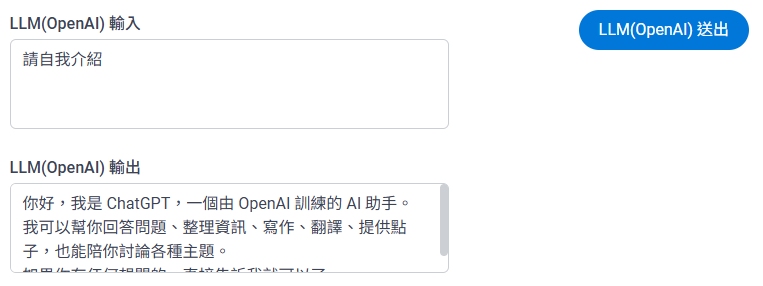

此畫面顯示 AgilePoint NX10 的管理介面，特別是「App Builder」下的「Global Access Tokens」區塊。它列出了現有的存取令牌，其中包含一個名為 "NX10JLOpenAITestToken" 且類型為 "OpenAI" 的令牌。這是管理與外部服務（如 OpenAI）API 存取的起點。
此清單展示了一個已配置的 OpenAI 存取令牌範例：
| TOKEN NAME | TYPE |
|---|---|
| NX10JLOpenAITestToken | OpenAI |

此畫面顯示「Add Access Token」對話框，使用者可以在此選擇要建立存取令牌的外部服務類型。圖中已選取 "OpenAI"，表示使用者正選擇 OpenAI 作為服務提供者。點擊「Next」按鈕可繼續。

此畫面是 OpenAI 存取令牌的配置界面。使用者需要提供令牌名稱、描述和 OpenAI 帳戶的 API Key。頁面中包含一個「Test Connection」按鈕用於驗證 API Key，以及一個「Model」下拉選單用於選擇預設的 OpenAI 模型。
請填寫以下必填欄位：
- Token Name *: 存取令牌的名稱。
- Description: 令牌的描述（選填）。
- API Key *: 您的 OpenAI API Key。
配置完成後，可以點擊「Test Connection」來測試連線是否成功，並在「Model」下拉選單中選擇預設模型。

此畫面展示了 AgilePoint eForm 的設計介面。表單包含兩個文字區域，分別標示為「LLM(OpenAI) 輸入」和「LLM(OpenAI) 輸出」，以及一個標示為「LLM(OpenAI) 送出」的按鈕。目前，「LLM(OpenAI) 輸入」欄位中預填了 "hi"。此表單旨在與已配置的 OpenAI 服務進行互動。

此畫面顯示「Lookup Details」區塊，很可能位於 eForm 配置內部，用於定義 OpenAI 查詢（lookup）。「Access Token」欄位已設定為「NX10JLOpenAITestToken (Global)」，這是前面步驟中建立的全局存取令牌。「Lookup Name」則設定為「LuOpenAI2」。此配置將 eForm 元件連結到全局 OpenAI 存取令牌。
| 欄位 | 值 |
|---|---|
| Access Token | NX10JLOpenAITestToken (Global) |
| Lookup Name | LuOpenAI2 |

此畫面展示「Configure Lookup」中的「Model Properties」設定。圖中顯示選定的模型為 "gpt-5.4"。同時，「Use model configured in access token」核取方塊已被勾選，表示將使用全局存取令牌中配置的模型。其他參數如「Frequency Penalty」、「Presence Penalty」、「Temperature」和「Nucleus Sampling (top_p)」等也在此處進行配置。
| 參數 | 值 |
|---|---|
| Model | gpt-5.4 |
| Use model configured in access token | Checked |
| Frequency Penalty | 1 |
| Presence Penalty | 0.00 |
| Temperature | 0.10 |
| Nucleus Sampling (top_p) | 1.00 |
| Maximum Output Token Length | (未設定) |
| Stop Sequences | (未設定) |

此畫面顯示「Configure Lookup」介面中的「System Instruction」標籤頁。此部分允許為 OpenAI 模型定義系統級指令，以引導其行為和角色設定。它包含「System Instruction」下拉選單和「Instruction Name」欄位，以及「Goals/Mission」、「Skills」、「Input」、「Instruction」、「Quality Verification」和「Output」等子標籤頁，用於更詳細的配置。

此畫面顯示「Configure Lookup」區塊中的「Request」標籤頁。圖中選取了「Message Content」，且 OpenAI 模型的輸入內容被動態映射為 $(taOpenAIInput)。這表示 eForm 中「LLM(OpenAI) 輸入」欄位的內容將作為請求發送給 OpenAI。右側的「FIELDS」面板顯示了可用的表單欄位，其中包含 taOpenAIInput 和 taOpenAIOutput。
- Message Content:
$(taOpenAIInput)(將 eForm 輸入欄位的值傳遞給 OpenAI)

此畫面顯示「Configure Lookup」區塊中的「Response」標籤頁。圖中選取了「Map OpenAI Response To App Schema」，表示 OpenAI 模型的回應將會被映射回 AgilePoint 應用程式的結構。下方還有選項可以將回應儲存為變數，可選擇儲存為 JSON 或字串格式。
- Map OpenAI Response To App Schema: 已選取
- Store The Response In This Variable: (將回應儲存到指定變數)
- Store Response JSON In This Variable: (將 JSON 格式的回應儲存到指定變數)
- Store Response Content In This Variable (String): (將字串格式的回應內容儲存到指定變數)

此畫面展示了將 OpenAI 回應視覺化映射到 eForm 欄位的過程。具體來說，OpenAI 回應中 message 物件的 content 字段被映射到 formFields 中的 taOpenAIOutput 欄位。這確保了 OpenAI 生成的文本將顯示在 eForm 的「LLM(OpenAI) 輸出」文字區域中。
映射關係：
- OpenAI Response:
message.content - eForm Field:
taOpenAIOutput

此畫面顯示了與 eForm 互動後的最終結果。使用者在「LLM(OpenAI) 輸入」欄位中輸入了「請自我介紹」。點擊提交按鈕後，「LLM(OpenAI) 輸出」欄位顯示了 AI 的回應：「你好, 我是 ChatGPT, 一個由 OpenAI 訓練的 AI 助手。我可以幫你回答問題、整理資訊、寫作、翻譯、提供點子，也能陪你討論各種主題。」這確認了與 OpenAI 成功整合並進行了互動。
| 欄位 | 內容 |
|---|---|
| LLM(OpenAI) 輸入 | 請自我介紹 |
| LLM(OpenAI) 輸出 | 你好, 我是 ChatGPT, 一個由 OpenAI 訓練的 AI 助手。我可以幫你回答問題、整理資訊、寫作、翻譯、提供點子，也能陪你討論各種主題。 |